地政学
チュニスは地中海とサハラの間で、欧州、マグレブ、アラブ世界を結ぶ首都です。大統領府、議会、大使館、港と空港が集まり、国内の地域格差や移民問題もここに投影され、海路と陸路の結節点です。湾岸も要です。

🇹🇳 チュニジア / 北アフリカ / World City Atlas
チュニスは、地中海に開いたメディナ、カルタゴの古代記憶、共和国政治、港湾物流、金融、繊維、若者の雇用問題、ラマダンの夜、海辺の白い町が重なる北アフリカの首都です。
都市の骨格
チュニスは、旧市街の宗教と商い、湾岸の港と空港、カルタゴの古代遺産、近代国家の官庁街が近い距離に並ぶ都市です。地中海の開放性と国内の地域格差が、同じ首都空間に現れます。
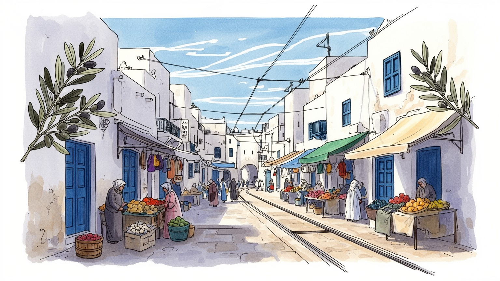
チュニスは地中海とサハラの間で、欧州、マグレブ、アラブ世界を結ぶ首都です。大統領府、議会、大使館、港と空港が集まり、国内の地域格差や移民問題もここに投影され、海路と陸路の結節点です。湾岸も要です。
官庁、銀行、港湾、繊維、観光が湾岸と都心を結びます。ラデス港、空港、工業地帯が輸出入を支え、若年失業、物価上昇、非正規労働が暮らしの不安として見え、家計にも響きます。通勤負担も大きい首都の姿です。
メディナのモスク、スーク、ラマダンの夜、フランス語文化、映画、音楽が重なります。ザイトゥーナ周辺の宗教空間とカフェ文化が、日常の時間を柔らかく分け、街の声を作ります。食卓と市場も文化の場です。日常です。
メディナ、カルタゴ、海辺の白い町、路面電車、カフェ、集合住宅が、観光都市と暮らしの首都を同時に形づくります。郊外化、渋滞、歴史保全も同じ地図に重なり、湾岸へ生活圏が広がります。週末の海辺も日常です。
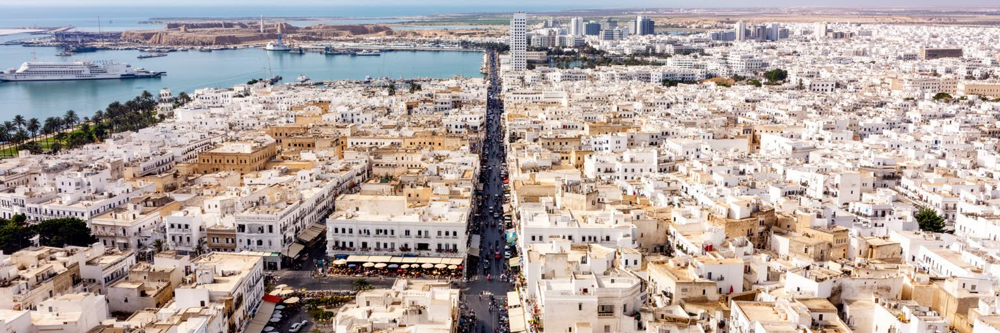
チュニスは、北アフリカの内陸と地中海をつなぐ位置にある首都です。街はチュニス湖と湾に近く、港、空港、鉄道、道路が国内各地と欧州方面を結びます。地理的にはアフリカ大陸の都市でありながら、歴史的にはフェニキア、ローマ、アラブ、オスマン、フランス、独立国家の層を持ち、海の向こうとの関係が都市の姿を作ってきました。チュニスを歩くと、メディナの狭い路地、フランス植民地期の大通り、近代的な官庁街、湖岸の開発、郊外の住宅地が短い距離で切り替わります。首都機能があるため、地方から仕事や行政手続きで来る人も多く、国内の地域格差はここに集まります。地中海への近さは観光と物流の強みですが、同時に移民、密航、欧州との政治交渉、海岸環境の問題にもつながります。チュニスは単なる観光都市ではなく、チュニジアが世界と接続する窓であり、国内の不均衡が見える鏡でもあります。内陸部から首都へ向かう人にとって、チュニスは就職、役所、病院、大学への入口です。その集中は便利さを生む一方、地方の選択肢の少なさも示します。海へ近い首都の明るさと、内側から集まる生活の重さを同時に見ることで、都市の輪郭はより現実的になります。鉄道駅やルアージュ乗り場では、家族への土産、携帯電話の連絡、地方紙の話題が混ざり、首都が全国の情報網を集める場所でもあることが伝わります。国境を越える視線と国内をまとめる役割が、チュニスの位置を特別にしています。海と内陸の両方が都市を動かします。
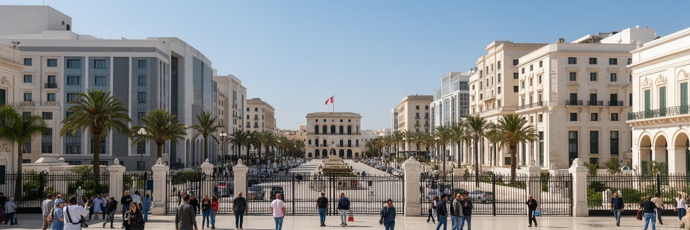
チュニスはチュニジア共和国の政治中心です。大統領府、政府機関、議会、裁判所、各国大使館、国際機関の事務所が首都圏に集まり、政策決定と抗議の場が近い距離にあります。2011年の革命以後、チュニジアはアラブ世界の政治変化を語るうえで大きな意味を持ちましたが、その記憶は抽象的な政治史だけではありません。雇用を求める若者、物価上昇に苦しむ家族、公共サービスに不満を持つ住民、表現の自由を守ろうとする市民団体が、街路と広場に政治を持ち込みます。首都のカフェや大学、新聞、テレビ、ラジオ、SNSは、政治的な議論の回路でもあります。サッカーの試合結果や物価の噂が、同じ卓上で閣僚人事や議会論議と並ぶのも首都の日常です。一方で、行政機能がチュニスに集中するほど、内陸部や南部との距離感も強まります。地方で起きた不満が首都の抗議へつながり、首都の決定が地方の生活へ跳ね返る構造があります。チュニスを見るには、建物の立派さだけでなく、国家機能がどれだけ住民の生活へ届いているかを見る視点が欠かせません。政治の中心は、日常の不安と切り離せません。首都の広場や大通りは、祝典、通勤、買い物、抗議が同じ場所で起こる空間です。警備の強化や交通規制は政治の出来事を住民の一日に持ち込みます。制度の変化は遠いニュースではなく、仕事の探し方、許認可、物価、公共サービスへの信頼として街に現れます。政治は通勤路にも出ます。
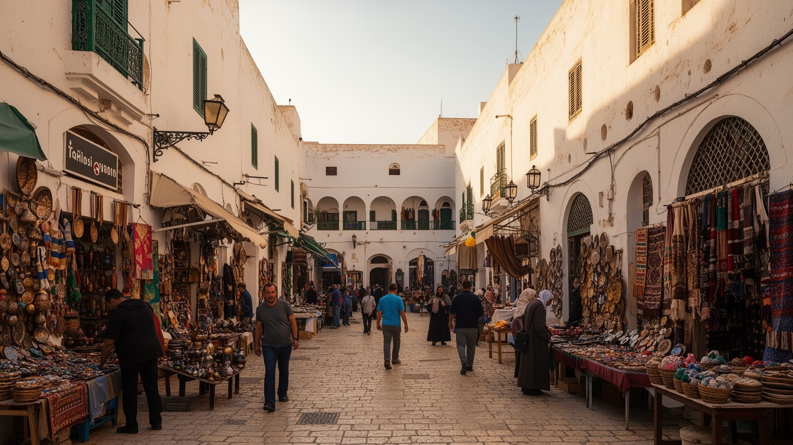
チュニスのメディナは、街の歴史と日常が重なる中心です。ザイトゥーナ・モスクを核に、スーク、職人街、住宅、学校、カフェ、小さな宿が迷路のような路地に並びます。観光客には土産物や建築装飾が目に入りやすい場所ですが、メディナは生活と商いの空間でもあります。礼拝の時間、店の開閉、荷物の搬入、近隣の会話、家族の用事が、観光の流れと同じ道を使います。香辛料、革、焼き菓子、ミント茶の匂い、金属を打つ音、呼び込みの声が細い路地に重なり、買い物は情報交換にもなります。旧市街の保存は、壁や扉を残すだけでは足りません。住民が住み続け、職人が働き、宗教空間が尊重され、観光収入が地域へ戻る循環が要になります。近代的な大通りやショッピングモールに比べると、メディナの経済は小規模で複雑です。革、金属、香辛料、布、菓子、修理、食堂の仕事は家族経営や徒弟的な関係に支えられます。観光需要が増えるほど、日用品の店が土産物店に変わる圧力もあります。チュニスのメディナは、過去の展示室ではなく、信仰、労働、住まい、観光が毎日調整される都市の心臓です。修復された扉や回廊の内側には、古い住宅の維持費、相続、空き家化、観光宿への転用といった課題があります。細い路地を守ることは、そこを歩く住民、礼拝者、職人、配達人の時間を守ることでもあります。メディナの価値は、使われ続ける都市生活にあります。
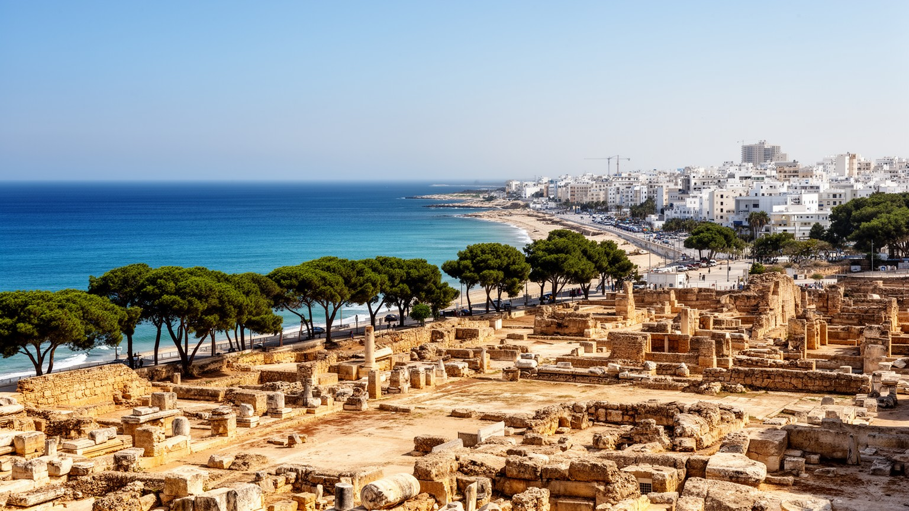
チュニスの東側には、カルタゴの遺産と地中海の郊外景観が広がります。カルタゴはフェニキア系の海上都市として成長し、ローマとの戦争、ローマ支配、後の宗教史や考古学を通じて、地中海世界の記憶に深く刻まれました。現在の訪問者は、遺跡、博物館、海の眺め、住宅地、学校、外交施設、観光ルートが混ざる空間を移動します。校外学習の子どもたち、考古学を学ぶ学生、週末に海風を浴びる家族、古代史を語るガイドが同じ湾岸を使います。古代遺産は街の誇りですが、保存には土地利用、交通、観光収入、教育の問題が伴います。遺跡が有名になるほど、周辺の地価や開発圧力も高まり、保存と日常生活の境界は簡単ではありません。カルタゴやシディ・ブ・サイドは美しい海辺のイメージで語られますが、そこにも住民の通勤、学校、買い物、公共交通、海岸環境があります。湾岸の観光は、チュニスを明るく国際的に見せる一方、首都中心部や内陸部との格差も映します。古代都市の記憶を読むには、石の遺構だけでなく、現代の湾岸生活がその遺産をどう使い、守り、商品化しているかを見る視点が欠かせません。遺跡の近くを通る道路、学校遠足、ガイドの説明、博物館の展示、地元の商店は、歴史を現在の経済に変える装置です。古代の名前が世界的に知られるほど、誰がその物語を語り、誰が収入を得るのかという問いも重要になります。湾岸の景観は歴史教育の場でもあります。
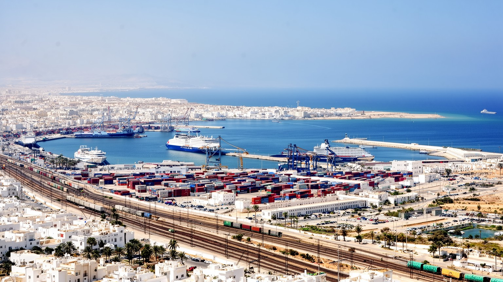
チュニスの経済を支える基盤のひとつが、港と空港です。ラデス港やラ・グレット周辺の港湾、チュニス・カルタゴ空港、湖岸と湾岸の道路網は、輸出入、観光、移民の移動、国際会議、家族訪問を支えます。港ではコンテナ、フェリー、工業品、食品、燃料、部品が動き、空港ではビジネス客、観光客、海外在住者、留学生が行き交います。物流は観光写真には写りにくい領域ですが、都市の物価、雇用、産業、店頭の商品に直結します。輸入品の価格が上がれば市場や家庭に影響し、港湾の混雑や通関の遅れは工場や小売にも響きます。港湾労働、運送、倉庫、整備、税関、警備、清掃、飲食は、多くの人の仕事を作ります。一方で、湾岸のインフラは交通渋滞、大気汚染、海岸環境、土地利用の課題も抱えます。チュニスを見るとき、メディナや遺跡だけでなく、港湾と空港を都市の心臓部として捉える視点が要ります。海への接続は、チュニスを国内の首都としてだけでなく、地中海の交易都市にもしています。港湾の近くでは大型車両、倉庫、整備工場、労働者向けの食堂、携帯で荷待ちを確認する運転手が日常を作ります。空港周辺では観光客だけでなく、海外で働く家族を迎える人や、留学へ向かう若者も見られます。物流の動きは、都市の感情や家族の移動ともつながっています。港の遅れは店頭価格にも響きます。
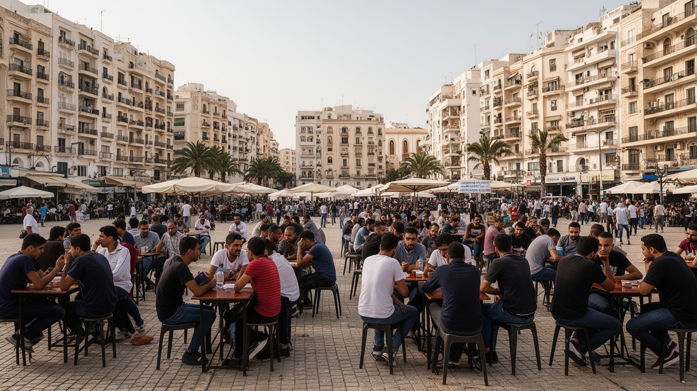
チュニスの産業は、行政、金融、商業、繊維、観光、教育、医療、通信、港湾関連の仕事に支えられています。首都には官庁や銀行、大学、病院、企業本部が集まり、地方からの就職希望者も多く集まります。しかし、仕事があるように見える首都でも、若年失業や低賃金、非正規労働、物価上昇は大きな焦点です。大学を出ても安定した職に就けない若者、カフェで時間を過ごす求職者、家族を支えるために複数の仕事をする人、観光やサービス業の季節変動に左右される人がいます。繊維や軽工業は輸出と雇用を支えますが、国際競争、賃金、労働条件の影響を受けやすい分野です。路上の売り子、修理店、軽食屋、乗合交通の呼び込みも、家計をつなぐ街路経済の一部です。金融や行政の中心性は首都の力ですが、内陸部との格差を広げる面もあります。チュニスの労働を読むには、華やかなカフェや新しいオフィスだけでなく、通勤時間、家賃、家族への送金、就職待ちの長さを見る視点が欠かせません。若い人口は活力を生む一方、将来への不安が政治や移民願望へつながることもあります。仕事探しの長期化は、結婚、住宅、家族への支援、海外移住の判断にも影響します。街のカフェや大学周辺に集まる若者は、消費者にとどまらず、都市の未来を待たされている世代でもあります。雇用の質を見なければ、首都の成長は表面だけになります。
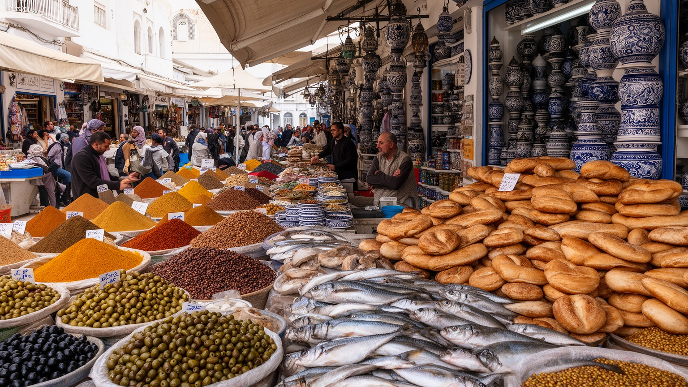
チュニスの文化は、アラブ・イスラムの都市生活、地中海の海辺感覚、フランス語圏の教育や出版、映画、音楽、食文化が重なって成り立ちます。街ではアラビア語とフランス語が場面によって使い分けられ、学校、役所、店、カフェ、家庭で言葉の層が変わります。食の面では、クスクス、ブリック、魚料理、ハリッサ、オリーブ、パン、菓子、コーヒーが日常の味を作ります。市場は観光客にとって香辛料や色彩の場所ですが、住民にとっては家計と季節を確認する場所です。ラマダンの時期には、昼と夜のリズムが変わり、家族の食事、夜の外出、菓子店、カフェ、礼拝が都市の時間を組み替えます。マルーフ音楽、現代ポップ、クラブ、映画館、テレビ番組、新聞の論説は、世代ごとの関心を映します。映画祭や音楽、文学、テレビは、チュニスを文化の発信地にもしています。一方で、文化の開放性は常に一枚岩ではありません。世俗的な生活感覚、宗教的な規範、若者の表現、保守的な家族観が同じ都市の中で隣り合います。チュニスの文化を読むには、名物料理や観光地だけでなく、言葉、食卓、学校、宗教暦、娯楽がどう共存しているかを見る姿勢が要ります。家庭料理とレストラン、屋台と観光向けの店、伝統音楽と若者文化は互いに離れていません。市場で買う食材の値段や、学校で使う言語、夜に集まるカフェの雰囲気が、都市の文化を毎日更新しています。
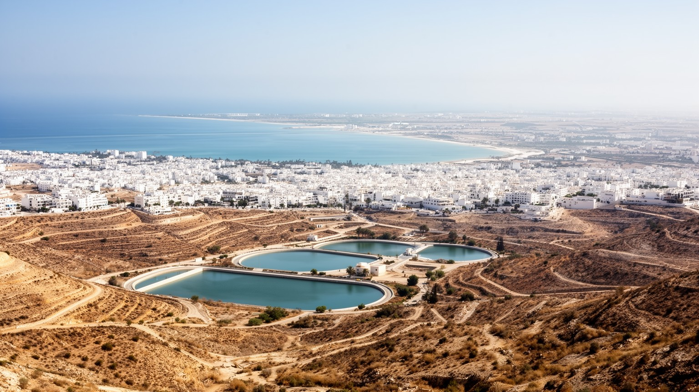
チュニスの暮らしは、都心だけでなく広がる首都圏の移動で成り立っています。メトロ・レジェと呼ばれる軽量鉄道、バス、タクシー、車、徒歩が、メディナ、近代的な大通り、郊外住宅地、大学、工業地帯、湾岸の町を結びます。人口と機能が郊外へ広がるほど、通勤時間、渋滞、燃料費、公共交通の混雑が生活の質を左右します。中心部に職場や学校が集まる一方、家賃や住宅事情から郊外に住む人も多く、毎日の移動が家計と時間を圧迫します。交通は都市の公平性を映す指標です。車を持てる人と持てない人、都心に近い人と遠い人、夜間に安全に移動できる人とできない人では、同じ首都でも使える都市が違います。湖岸や湾岸の開発は新しい住宅や商業施設を生みますが、水辺の環境、道路混雑、公共空間の不足も問題になります。チュニスを理解するには、観光客が歩くメディナだけでなく、朝夕の通勤、バス停の待ち時間、郊外の集合住宅、家族の送り迎えを見る視点が欠かせません。都市の広がりは、首都の成長と負担を同時に示します。郊外の住宅地では、新しい集合住宅と未整備の歩道、商店、学校、空き地が混在します。子どもの通学、高齢者の通院、女性の夜間移動は、公共交通の本数や安全感に左右されます。交通費が上がれば、中心部の仕事へ通う意味も揺らぎます。移動のしやすさは、首都で機会を得られるかどうかの条件です。
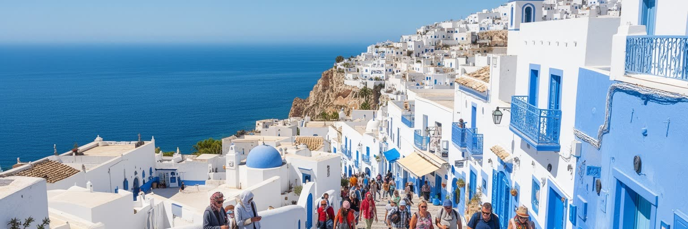
チュニスの観光イメージを強く形づくるのが、シディ・ブ・サイドやラ・マルサなどの海辺の町です。白い壁、青い扉、地中海を見下ろすカフェ、坂道、ギャラリー、海岸の散歩は、首都圏に明るい余暇の表情を与えます。旅行者にとっては短時間で訪れやすい名所ですが、そこは住民の日常生活の場でもあります。学校、住宅、商店、交通、海岸管理、週末の混雑、家賃上昇が、観光の美しさの背後にあります。海辺の景観はチュニジアらしさとして商品化されやすく、写真やSNSで広がりますが、人気が高まるほど住民の静かな暮らしや地域商店のあり方も変わります。カフェ文化は都市の魅力であり、若者が時間を過ごし、仕事や政治や家族の話をする公共的な空間でもあります。海辺の余暇は、富裕層だけのものではなく、家族連れ、学生、労働者、観光客がそれぞれの予算と時間で使う都市資源です。サッカー観戦、浜辺の散歩、ジョギング、小さな遊園地やカフェの夜更かしも、首都圏の休み方を形づくります。チュニスの海を読むには、青と白の景色だけでなく、アクセス、住まい、物価、海岸環境、週末の移動を合わせて見る視点が欠かせません。海辺の町で働く人は、観光客が去った後も掃除、仕入れ、通勤、家族の世話を続けます。人気の景観が不動産価値を押し上げるほど、地元の若者が同じ地域に住み続けることは難しくなります。余暇の場は、都市の公平性とも結びついています。
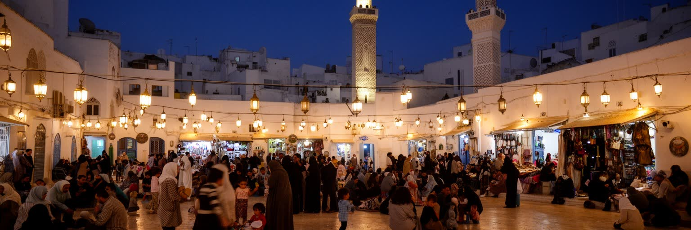
チュニスは、比較的開かれた地中海都市として語られる一方、社会的な緊張も抱えています。若年失業、物価上昇、地方との格差、移民と難民、政治への不信、宗教と世俗性の距離、公共空間での表現の自由は、首都の重要な論点です。メディナの宗教空間、大学、カフェ、広場、官庁街、海辺の観光地は、それぞれ異なるルールと期待を持ちます。ラマダン、犠牲祭、家族の祝い、サッカーの大一番、コンサートの夜は、街の人流と警備と商売を一気に変えます。ラマダンの夜には家族と信仰の時間が街を包み、別の日には政治的な議論や若者の不満が同じ街路に現れます。チュニスの課題は、ひとつの対立で説明できません。都市の中心に近いほど機会がある一方、家賃や生活費は上がります。教育を受けた若者ほど期待も大きく、仕事が見つからない失望も深くなります。観光地としての明るい顔と、住民の不安は同時に存在します。移民の通過地、出発地、受け入れ地としての側面も、地中海の政治と結びつきます。チュニスを読むには、白い町や遺跡の美しさだけでなく、誰が仕事を得て、誰が街に声を出せて、誰が移動を選ばざるを得ないのかを見る視点が欠かせません。治安、表現、信仰、雇用、移住は別々の問題に見えて、公共空間の使い方でつながります。首都の中心で過ごす人、郊外から通う人、通過する移民、観光で訪れる人が同じ街路を共有するからこそ、都市の緊張は具体的になります。
チュニスは、短い滞在でも複数の顔が重なる都市です。メディナでは宗教と商いの長い時間に触れられ、カルタゴでは地中海の古代史が現れ、シディ・ブ・サイドやラ・マルサでは海辺の余暇が広がります。近代的な大通りと官庁街は共和国の首都を示し、港と空港は輸出入、観光、移民、家族の移動を支えます。しかし、これらは別々の名所ではありません。旧市街の商人、港湾労働者、官庁で働く人、仕事を探す若者、海辺のカフェで過ごす学生、郊外から通勤する家族が、同じ首都圏の中でつながっています。市場の値札、携帯のメッセージ、ラジオのニュース、サッカー談義、学校の送り迎え、祖父母の通院は、観光地図に出にくい都市の結び目です。観光の美しいイメージは、生活費、失業、交通、住宅、政治的な不満、地域格差と切り離せません。チュニスを読む鍵は、地中海への開放性と国内の不均衡を同時に見ることです。海は都市を外へ開きますが、首都の富と機会が誰に届くかは別の焦点です。メディナ、湾岸、官庁街、郊外、港を一つの地図に置くと、チュニスは観光都市でもあり、政治都市でもあり、生活の重さを抱えた首都でもあります。短い旅行では青と白の海辺や古代遺跡が印象に残りますが、都市の本質は移動、仕事、信仰、行政、家計の中にもあります。美しい首都を美しいまま理解するには、その美しさを維持する労働と、そこからこぼれる人の不安を同時に見ることが欠かせません。